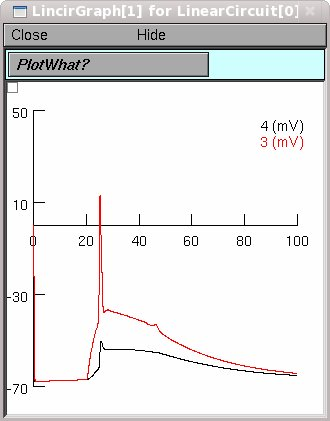

This is the readme for the NEURON simulation files used in Nevian T, Larkum ME, Polsky A, Schiller J. Properties of basal dendrites of layer 5 pyramidal neurons: a direct patch-clamp recording study. Nat Neurosci. 2007 Feb;10(2):206-214. The simulation code was supplied by Alon Polsky. The simulation demonstrates initiation of a dendritic spike by current injection from the 'dsyn' point process (double exponential current injection source) located 45um from the soma and backpropagation of action potential from somatic current injection. The simulation includes a linearcircuit mechanism that simulates the filtration imposed thin dendritic electrodes. Effects of different levels of filtration can be examined by clicking on 'parameters' button on the LinearCircuit[0] panel. When run (click Init & Run), the simulation automatically(*) executes the simulation of a dendritic spike for a constant dendritic sodium distribution presented at figure 6 of the paper. To run the simulation of backpropagation of action potential set the gmax of dsyn to zero and set the amp of IClamp to 3nA. You can do this in the point process window which is already open. Example run: Auto-launch from ModelDB and press enter to start the simulation or download and extract the archive which will create a folder of files. Compile the mod files and start under Linux ----- by cd'ing to the folder and then typing nrnivmodl, and then nrngui mosinit.hoc Mac OS X -------- by dragging and dropping the folder on the makenrndll icon, and then dragging and dropping the mosinit.hoc file onto the nrngui icon. mswin ----- by running mknrndll and cd'ing to the folder, and click on make nrnmech.dll. Finally double click on the mosinit.hoc file in windows explorer. Once the simulation is started ------------------------------ Click the Init & Run button to generate the following graph similar to the constant distribution of Na+ current in figure 6c:  (*) ModelDB administrator note: the model default temperature was changed from 36.6C to 37C and global_ra=100ohm-cm were applied as per original readme instructions.